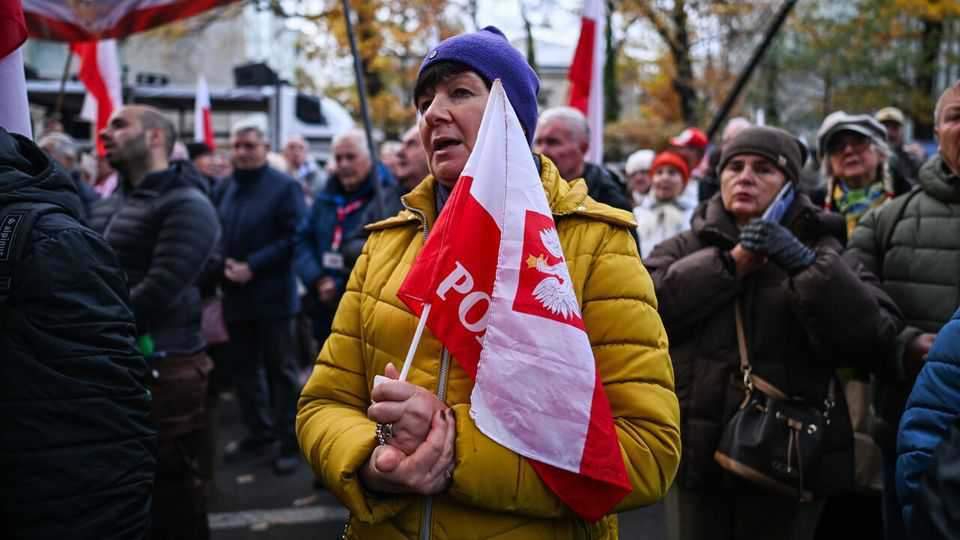
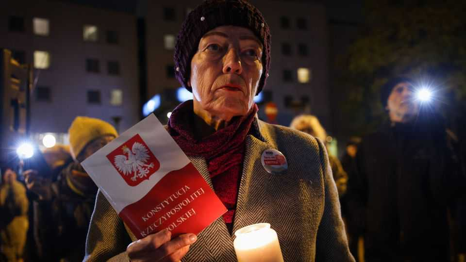

Will Poland’s war over the rule of law ever end?
Liberals and populists are locked in an eternal struggle over the courts

Nov 5th 2026
The scene outside Poland’s Constitutional Tribunal on November 3rd, as the court met to approve its draft budget, was unusually rambunctious. Hundreds of right-wing protesters gathered around a stage flanked by Polish flags and a large picture of the Virgin Mary. Speakers hurled abuse at the European Union; at Donald Tusk, Poland’s prime minister; and at the “usurpers” of the court—that is, the judges, appointed by parliament, whom Mr Tusk had helped to take their seats, despite obstruction by his populist-right opponents.
The latest episode in the sorry saga of Poland’s top court began on October 30th, when the judges marched into the court to assume their duties while police sealed the area. Approved by parliament between March and September, they had until then been blocked by the court’s president, Bogdan Swieczkowski, and Poland’s president, Karol Nawrocki, both aligned with the opposition Law and Justice (PiS) party. Mr Nawrocki is by law required to attend justices’ swearing-in ceremonies, but he had refused, giving Mr Swieczkowski an excuse to claim they were not legitimate.
One of the new justices, Anna Korwin-Piotrowska, promptly announced she was suspending Mr Swieczkowski for a month and taking his place. Protesters and opposition leaders gathered outside, calling it a coup. Mr Nawrocki cut short a trip to Senegal in mid-air, flew back to Warsaw and forced his way into the building. By November 3rd the situation had calmed and the budget meeting went ahead, but judges named by the previous PiS-led government boycotted it.

The struggle over the court goes back to 2015, when Mr Nawrocki’s predecessor, also a PiS ally, refused to swear in three judges chosen by the outgoing parliament. The new PiS government then packed the court with its own partisans. That led to years of wrangling in European courts, and the EU blocked billions of euros in funds. Since Mr Tusk and his Civic Coalition (KO) returned to power in 2023, parliament has picked eight judges to fill vacancies. Mr Nawrocki refuses to swear in five of them.
Four former presidents of the tribunal have defended Mr Tusk’s move. The European Commission, agreeing with opinions issued by European legal bodies, said the right to appoint the judges lay with parliament. But Ms Korwin-Piotrowska’s case for suspending the court’s president is shakier. Marcin Wiacek, a former national ombudsman, says he has “serious doubts” about its legality: it creates “a weapon any future government could wield”.
Officials say there was no other way to break the deadlock. “Swieczkowski’s strategy was to hold the court hostage,” says Dariusz Mazur, the deputy justice minister. On October 31st Mr Tusk said that there can be “no compromise” in restoring the rule of law. But the suspensions are sure to be challenged in Polish courts, and could then reach European ones.
After a decade of lawfare, the court’s credibility is shot. In late 2025 the EU’s top court ruled that it no longer met the requirements of an independent tribunal. Fought over by two camps, one headed by the president, the other by the prime minister, the court has become a political trophy. The tug-of-war will probably continue until parliamentary elections, scheduled next year. In trying to undo the knot entangling the court, Mr Tusk has tightened it further. Mr Nawrocki, meanwhile, can simply play for time. PiS may return to power in 2027 in a coalition with even more extreme populist parties, and try to oust the new justices.
Many Poles care little for either side’s legal arguments, and ask only for a functional court. They are helpless, frustrated bystanders. Some analysts and legal scholars believe that only a complete “reset” can salvage the tribunal. That would require a political compromise between PiS and KO, as well as constitutional changes.
Yet the two sides are less interested in fixing the court than in controlling it and scoring points ahead of elections. “Each one is out to consolidate and mobilise its core supporters,” says Anna Materska-Sosnowska, a political scientist. “Neither is prepared to back down.”■